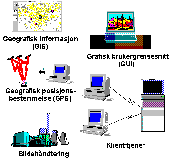

Politioperativt system (PO)

- PO-prosjektet er et godt eksempel på hvordan AC anvender nye og
spennende teknologier for å løse kunders forretningsproblemer.
Gjennom å integrere funksjonell forståelse med elementer slik som
klient/tjener-arkitektur, grafisk brukergrensesnitt, geografisk
informasjon (GIS), geografisk posisjons-bestemmelse (GPS) og
bildehåndtering har det vært mulig å oppnå en unik løsning som
understøtter operativt politiarbeide.
Teknisk miljø
- Utviklingsverktøy: Windows 4GL fra Ingres samt C
- Geografisk funksjonalitet: Tellus fra Sysdeco Innovation
- Database: Ingres relasjonsdatabase
- Tjenerplattform: UNIX
- Klientplattform: UNIX (Motif/X-Windows) eller
Windows NT
- PO-systemet er utviklet i samarbeid med Politiets datatjeneste og
ble først tatt i bruk under OL. Løsningen er nå i ferd med å bli
utplassert ved alle landets politikammere.